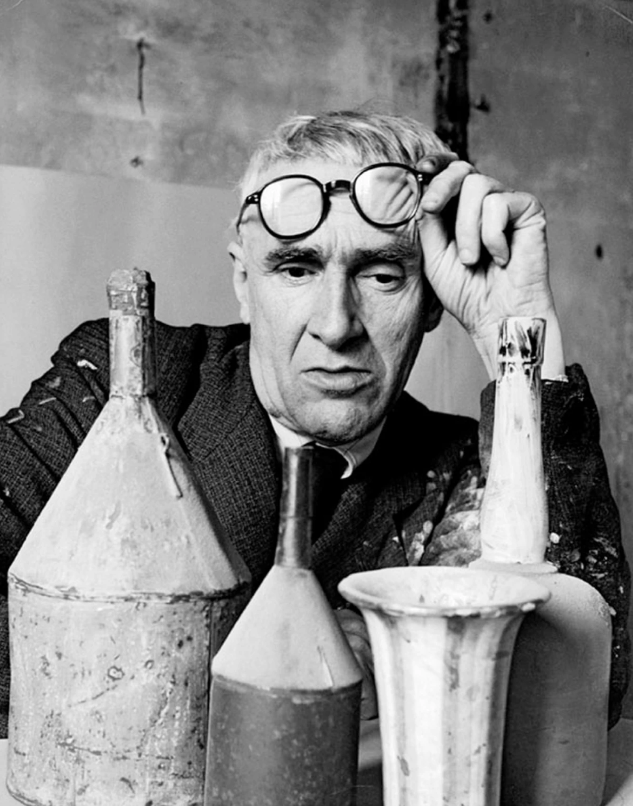
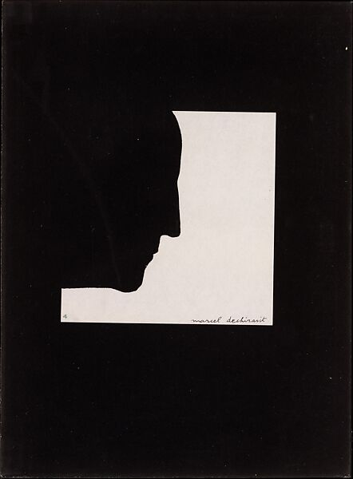
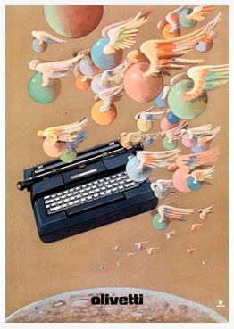
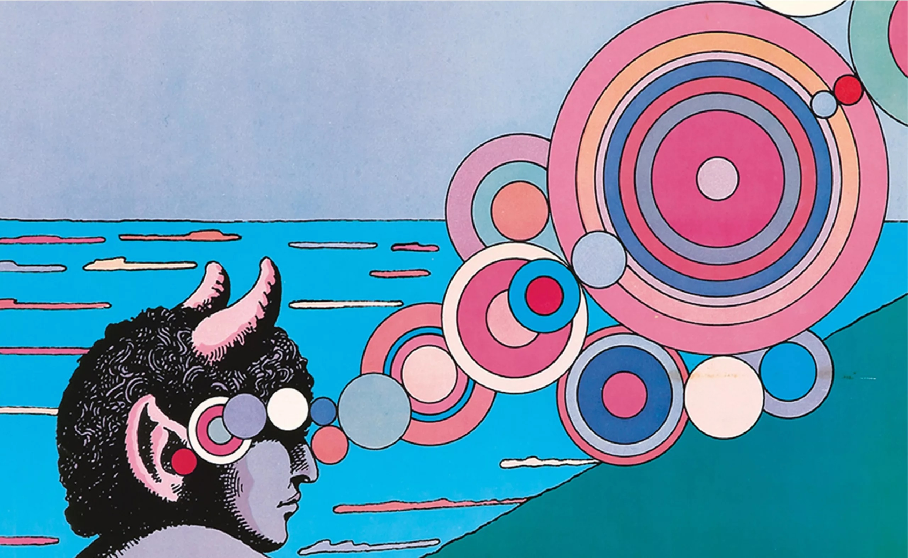
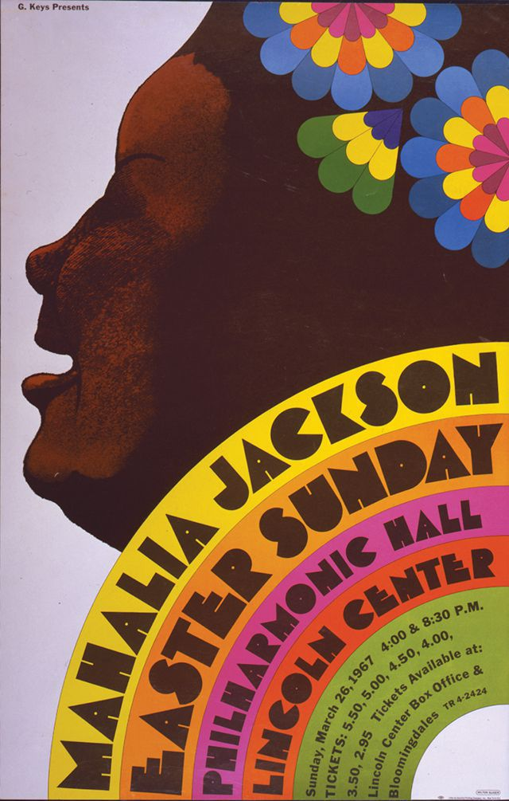

Glaser had been inspired by American comic
books since he was young, but he also developed
a love for Renaissance Art and Italian Design
while he studied abroad in his postgraduate
years. Glaser studied under Giorgio Morandi in
Bologna, Italy, who influenced Glaser’s ideas of
color, light, and atmosphere.

Glaser’s iconic Bob Dylan
album cover was inspired
by Marcel Duchamp’s 1957
Self-Portrait.


Glaser focused on designing posters
and prints, and his love for comic
books, modern art, and the art of
non-Western cultures is evident in
his designs. He expressed ideas and
subjects through simplified images,
countoured lines, and flat color.
Typically, psychedelic colors were
his go-to because of the mind-
altering substance usage in the 60s.


